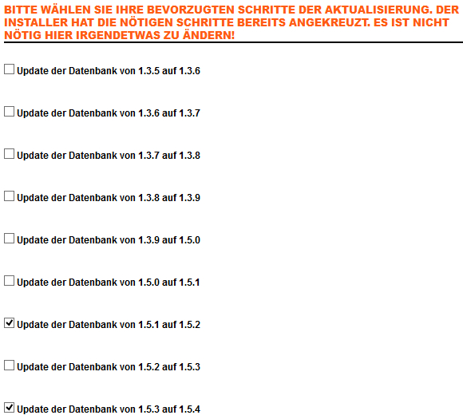

Anleitung zum Update von Zen Cart 1.5.3 deutsch auf Zen Cart 1.5.4 deutsch
UPDATE VON Zen Cart 1.5.3 deutsch auf 1.5.4 deutsch
Da die Änderungen zwischen 1.5.3 deutsch und 1.5.4 deutsch nicht so umfangreich sind wie bei größeren Versionssprüngen, können Sie für ein Update von 1.5.3 deutsch auf 1.5.4 deutsch ein eigenes Updatepaket nutzen.
Es befindet sich im Ordner UPDATE VON 1.5.3 auf 1.5.4 des Zen Cart 1.5.4 Downloads.
ACHTUNG:
Dieses Updatepaket ist NUR geeignet, wenn Sie bereits Version 1.5.3 deutsch verwenden!
Überprüfen Sie in der Administration unter Tools > Serverinfo, ob sie wirklich die deutsche Version 1.5.3 im Einsatz haben.
Überprüfen Sie zusätzlich die Datei includes/version.php
Sie muss folgendes anzeigen:
define('PROJECT_VERSION_MINOR', '5.3');
define('NEW_VERSION_CHECKUP_URL','http://www.zen-cart-pro.at/version_id.txt');
Wenn Sie eine ältere Version (1.5.2, 1.5.1, 1.5 oder noch älter) verwenden, dann müssen Sie ein komplettes Update machen und können dieses Updatepaket nicht nutzen!
Dieses Paket ist ebenfalls NICHT geeignet, wenn Sie die amerikanische Zen Cart Version verwenden!
Sie haben 1.5.3 deutsch und möchten auf 1.5.4 deutsch updaten?
Gut, dann weiterlesen.
Führen Sie die folgenden Schritte erst in einem Testsystem aus! Aktualisieren Sie nie direkt einen Liveshop!
Wenn Sie schon einmal ein Modul installiert haben, dann wird Ihnen diese Vorgangsweise bekannt vorkommen.
Für das Update sollten Sie über folgende Werkzeuge verfügen:
1) Ein guter Texteditor.
Damit ist nicht das in Windows enthaltene Notepad oder Microsoft Word gemeint.
Sie benötigen einen Texteditor, der utf-8 versteht und auch im Format utf-8 ohne BOM abspeichern kann.
Empfehlung: UltraEdit (kostenlose 30 Tage Testversion verfügbar)
Ebenfalls gut geeignet ist der kostenlose Texteditor Notepad++
2) Ein Tool zum Vergleichen von Dateien
Bei der Installation dieses Updates ist es erforderlich, dass Sie den Inhalt einiger Ihrer bestehenden Zen Cart Dateien mit dem Inhalt der neuen Dateien vergleichen und die Änderungen zusammenführen ("mergen").
Empfehlung: BeyondCompare (kostenlose 30 Tage Testversion verfügbar)
Ebenfalls gut geeignet ist das kostenlose Programm WinMerge
Sichern Sie unbedingt alle Dateien Ihres Shops per FTP und sichern Sie die Datenbank mit phpMyAdmin oder anderen geeigneten Tools!
Ablauf des Updates:
1)
Im Ordner GEAENDERTE DATEIEN den Ordner DEINADMIN auf den Namen Ihres admin Verzeichnisses umbenennen.
Alle Ordner namens DEINTEMPLATE auf den Namen Ihres in Shop aktiven Templates umbenennen (z.B. viennaorange, classic,...).
Vergleichen Sie nun mit WinMerge oder Beyond Compare die Dateien mit denen Ihres Shops und nehmen die Änderungen manuell vor, sonst gehen Änderungen, die Sie vielleicht früher schon einmal an diesen Dateien vorgenommen haben verloren.
Die Dateien im Ordner editors müssen Sie nicht unbedingt vergleichen, die Editoren TinyMCE und CKEditor wurden auf die aktuellen Versionen aktualisiert, es ist sehr unwahrscheinlich, dass Sie in diesen Dateien irgendwann einmal Änderungen vorgenommen haben.
Nach Ihren Änderungen laden Sie die Dateien/Ordner in der vorgegebenen Struktur ins Shopverzeichnis hoch und überschreiben die bestehenden Dateien am Server damit.
2)
Im Ordner NEUE DATEIEN den Ordner DEINADMIN auf den Namen Ihres admin Verzeichnisses umbenennen.
Alle Ordner namens DEINTEMPLATE auf den Namen Ihres in Shop aktiven Templates umbenenennen (z.B. viennaorange, classic,...).
Nun in der vorgegebenen Struktur hochladen, dabei werden keine bestehenden Dateien überschrieben.
3)
Nun rufen Sie folgende Adresse auf:
http://www.meinshop.de/zc_install
Der Zen Cart Installer wird Sie begrüßen:

Clicken Sie auf Weiter und akzeptieren die Lizenzbedingungen:

Sie sollten nun im nächsten Schritt folgende Meldung sehen:
Updatemodus verfügbar.
Es wurde eine vorherige Zen Cart Installation gefunden, die installierte Version scheint v1.5.3 zu sein.

Die obere Warnmeldung können Sie ignorieren, Ihr Adminverzeichnis heißt ja nicht mehr admin und Ihre configure.php Dateien sind schreibgeschützt. Das ist völlig ok so.
Scrollen Sie nun nach unten und wählen hier den Button "Datenbank aktualisieren":

Im nächsten Schritt sollten Sie folgendes Bild sehen:

Möglicherweise ist bei Ihnen zusätzlich ein früheres Datenbankupdate angekreuzt und es sieht z.B. so aus:

Falls weitere Updates angekreuzt sind, entfernen Sie das Häkchen bei den früherern Updates! Nur Update der Datenbank von 1.5.3 auf 1.5.4 darf angekreuzt sein, so dass es so aussieht:
Geben Sie nun unten Benutzernamen und Passwort zu Ihrer Zen Cart Administration ein und gehen auf Datenbank jetzt updaten:

Danach sehen Sie folgende Erfolgsmeldung:

Das zc_install Verzeichnis sollte vom Updater auf zc_install_irgendwelcheziffernundbuchstaben umbenannt worden sein. Löschen Sie dieses Verzeichnis nun komplett!
Loggen Sie sich in Ihren Adminbereich ein und überprüfen Sie unter Tools > Serverinfo, dass Sie erfolgreich auf Zen Cart 1.5.4 aktualisiert haben.